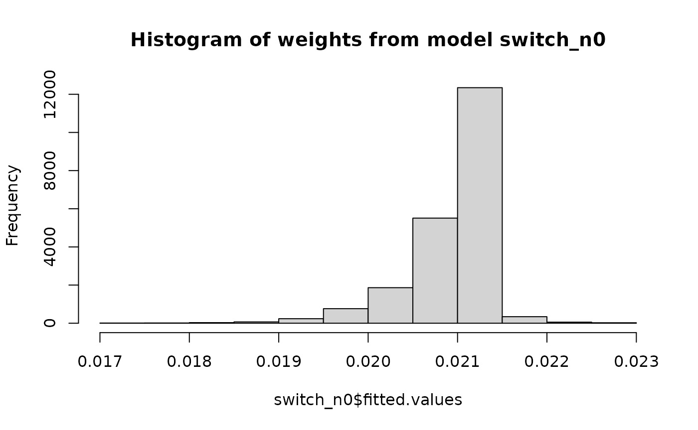

This package implements methods to analyse a sequence of target trials.
The steps to do this are:
- create a data set with all the required variables
- fit models for censoring and calculate inverse probability weights
- expand the data set, with records for each eligible patient for each trial period
- fit models for outcomes
The package provides two options for conducting the analysis: an all-in-one function and a set of more flexible functions.
Required Data
To get started a longitudinal dataset must be created containing:
- time period
- patient identifier
- treatment indicator
- outcome indicator
- censoring indicator
- eligibility indicator for a trial starting in each time period
- other covariates relating to treatment, outcome, or informative censoring to be used in the models for weights or the outcome
An example data set is included to demonstrate the format:
library(TrialEmulation)
# Prepare the example data
data("trial_example")
# Set columns to factors as necessary
trial_example$catvarA <- as.factor(trial_example$catvarA)
trial_example$catvarB <- as.factor(trial_example$catvarB)
head(trial_example)
#> id eligible period outcome treatment catvarA catvarB catvarC nvarA nvarB
#> 1 202 1 310 0 0 0 2 0 0 35
#> 2 202 1 311 0 1 0 2 1 0 42
#> 3 202 1 312 0 1 0 2 1 0 48
#> 4 202 1 313 0 1 0 2 1 0 43
#> 5 202 0 314 0 1 0 2 1 0 45
#> 6 202 0 315 0 1 0 2 1 0 48
#> nvarC
#> 1 74
#> 2 74
#> 3 74
#> 4 75
#> 5 75
#> 6 75All-in-one analysis
There is an all-in-one function initators() which does
all of the steps with one function call. This is similar to the
INITIATORS SAS macro previously published by the Harvard CAUSALab. It can
be accessed via web.archive.org:
e.g.
https://web.archive.org/web/20220814131941/https://causalab.sph.harvard.edu/software/.
Call the initiators() function to run the complete
analysis:
result <- initiators(
data = trial_example,
id = "id",
period = "period",
eligible = "eligible",
treatment = "treatment",
estimand_type = "ITT",
outcome = "outcome",
model_var = "assigned_treatment",
outcome_cov = c("catvarA", "catvarB", "nvarA", "nvarB", "nvarC"),
use_censor_weights = FALSE
)
#> Starting data manipulation
#> Starting data extension
#> Summary of extended data:
#> Number of observations: 1939053
#> ------------------------------------------------------------
#> Preparing for model fitting
#> ------------------------------------------------------------
#> Fitting outcome model
#>
#> Call:
#> glm(formula = outcome ~ assigned_treatment + trial_period + I(trial_period^2) +
#> followup_time + I(followup_time^2) + catvarA + catvarB +
#> nvarA + nvarB + nvarC, family = binomial(link = "logit"),
#> data = data, weights = w)
#>
#> Coefficients:
#> Estimate Std. Error z value Pr(>|z|)
#> (Intercept) -3.21e+00 1.41e-01 -22.76 < 2e-16 ***
#> assigned_treatment -2.73e-01 4.66e-02 -5.86 4.6e-09 ***
#> trial_period 1.73e-03 6.01e-04 2.87 0.00404 **
#> I(trial_period^2) 1.27e-06 1.48e-06 0.86 0.39199
#> followup_time 2.85e-03 5.21e-04 5.48 4.2e-08 ***
#> I(followup_time^2) -6.90e-06 2.27e-06 -3.04 0.00233 **
#> catvarA1 2.98e-01 2.80e-02 10.63 < 2e-16 ***
#> catvarA2 1.52e-01 3.86e-02 3.95 7.9e-05 ***
#> catvarA3 -1.11e+01 3.48e+01 -0.32 0.75104
#> catvarA7 4.13e-01 3.75e-02 11.01 < 2e-16 ***
#> catvarB1 -4.05e-01 1.12e-01 -3.63 0.00029 ***
#> catvarB2 -4.31e-01 1.15e-01 -3.74 0.00019 ***
#> catvarB3 -2.44e+00 3.35e-01 -7.28 3.4e-13 ***
#> catvarB7 -7.16e-01 1.12e-01 -6.37 1.8e-10 ***
#> nvarA -8.55e-02 7.67e-03 -11.15 < 2e-16 ***
#> nvarB 5.35e-03 3.16e-04 16.91 < 2e-16 ***
#> nvarC -4.20e-02 8.76e-04 -47.97 < 2e-16 ***
#> ---
#> Signif. codes: 0 '***' 0.001 '**' 0.01 '*' 0.05 '.' 0.1 ' ' 1
#>
#> (Dispersion parameter for binomial family taken to be 1)
#>
#> Null deviance: 111015 on 1939052 degrees of freedom
#> Residual deviance: 107649 on 1939036 degrees of freedom
#> AIC: 107683
#>
#> Number of Fisher Scoring iterations: 15
#> ------------------------------------------------------------
#> Calculating robust variance
#> Summary with robust standard error:
#> names estimate robust_se 2.5% 97.5% z p_value
#> 1 (Intercept) -3.21e+00 7.03e-01 -4.59e+00 -1.84e+00 -4.575 4.76e-06
#> 2 assigned_treatment -2.73e-01 3.10e-01 -8.80e-01 3.35e-01 -0.880 3.79e-01
#> 3 trial_period 1.73e-03 4.07e-03 -6.25e-03 9.70e-03 0.424 6.71e-01
#> 4 I(trial_period^2) 1.27e-06 9.52e-06 -1.74e-05 1.99e-05 0.133 8.94e-01
#> 5 followup_time 2.85e-03 3.40e-03 -3.81e-03 9.52e-03 0.840 4.01e-01
#> 6 I(followup_time^2) -6.90e-06 1.62e-05 -3.87e-05 2.49e-05 -0.426 6.70e-01
#> 7 catvarA1 2.98e-01 1.88e-01 -6.99e-02 6.66e-01 1.587 1.12e-01
#> 8 catvarA2 1.52e-01 2.84e-01 -4.03e-01 7.08e-01 0.537 5.91e-01
#> 9 catvarA3 -1.11e+01 9.45e-01 -1.29e+01 -9.20e+00 -11.697 0.00e+00
#> 10 catvarA7 4.13e-01 2.17e-01 -1.32e-02 8.39e-01 1.899 5.75e-02
#> 11 catvarB1 -4.05e-01 3.06e-01 -1.00e+00 1.94e-01 -1.325 1.85e-01
#> 12 catvarB2 -4.31e-01 3.64e-01 -1.14e+00 2.82e-01 -1.186 2.36e-01
#> 13 catvarB3 -2.44e+00 9.25e-01 -4.25e+00 -6.27e-01 -2.637 8.36e-03
#> 14 catvarB7 -7.16e-01 3.04e-01 -1.31e+00 -1.20e-01 -2.354 1.86e-02
#> 15 nvarA -8.55e-02 4.49e-02 -1.74e-01 2.55e-03 -1.903 5.70e-02
#> 16 nvarB 5.35e-03 2.22e-03 1.00e-03 9.70e-03 2.412 1.59e-02
#> 17 nvarC -4.20e-02 6.89e-03 -5.55e-02 -2.85e-02 -6.102 1.05e-09
#> ------------------------------------------------------------
summary(result)
#> Trial Emulation Outcome Model
#>
#> Outcome model formula:
#> outcome ~ assigned_treatment + trial_period + I(trial_period^2) +
#> followup_time + I(followup_time^2) + catvarA + catvarB +
#> nvarA + nvarB + nvarC
#>
#> Coefficent summary (robust):
#> names estimate robust_se 2.5% 97.5% z p_value
#> (Intercept) -3.21e+00 7.03e-01 -4.59e+00 -1.84e+00 -4.575 5e-06
#> assigned_treatment -2.73e-01 3.10e-01 -8.80e-01 3.35e-01 -0.880 0.379
#> trial_period 1.73e-03 4.07e-03 -6.25e-03 9.70e-03 0.424 0.671
#> I(trial_period^2) 1.27e-06 9.52e-06 -1.74e-05 1.99e-05 0.133 0.894
#> followup_time 2.85e-03 3.40e-03 -3.81e-03 9.52e-03 0.840 0.401
#> I(followup_time^2) -6.90e-06 1.62e-05 -3.87e-05 2.49e-05 -0.426 0.670
#> catvarA1 2.98e-01 1.88e-01 -6.99e-02 6.66e-01 1.587 0.112
#> catvarA2 1.52e-01 2.84e-01 -4.03e-01 7.08e-01 0.537 0.591
#> catvarA3 -1.11e+01 9.45e-01 -1.29e+01 -9.20e+00 -11.697 <2e-16
#> catvarA7 4.13e-01 2.17e-01 -1.32e-02 8.39e-01 1.899 0.058
#> catvarB1 -4.05e-01 3.06e-01 -1.00e+00 1.94e-01 -1.325 0.185
#> catvarB2 -4.31e-01 3.64e-01 -1.14e+00 2.82e-01 -1.186 0.236
#> catvarB3 -2.44e+00 9.25e-01 -4.25e+00 -6.27e-01 -2.637 0.008
#> catvarB7 -7.16e-01 3.04e-01 -1.31e+00 -1.20e-01 -2.354 0.019
#> nvarA -8.55e-02 4.49e-02 -1.74e-01 2.55e-03 -1.903 0.057
#> nvarB 5.35e-03 2.22e-03 1.00e-03 9.70e-03 2.412 0.016
#> nvarC -4.20e-02 6.89e-03 -5.55e-02 -2.85e-02 -6.102 1e-09
#>
#> result$model contains the fitted glm model object.
#> result$robust$matrix contains the full robust covariance matrix.By default, this returns the final glm model object and
the results using the sandwich estimator.
summary(result$model)
#>
#> Call:
#> glm(formula = outcome ~ assigned_treatment + trial_period + I(trial_period^2) +
#> followup_time + I(followup_time^2) + catvarA + catvarB +
#> nvarA + nvarB + nvarC, family = binomial(link = "logit"),
#> data = data, weights = w)
#>
#> Coefficients:
#> Estimate Std. Error z value Pr(>|z|)
#> (Intercept) -3.21e+00 1.41e-01 -22.76 < 2e-16 ***
#> assigned_treatment -2.73e-01 4.66e-02 -5.86 4.6e-09 ***
#> trial_period 1.73e-03 6.01e-04 2.87 0.00404 **
#> I(trial_period^2) 1.27e-06 1.48e-06 0.86 0.39199
#> followup_time 2.85e-03 5.21e-04 5.48 4.2e-08 ***
#> I(followup_time^2) -6.90e-06 2.27e-06 -3.04 0.00233 **
#> catvarA1 2.98e-01 2.80e-02 10.63 < 2e-16 ***
#> catvarA2 1.52e-01 3.86e-02 3.95 7.9e-05 ***
#> catvarA3 -1.11e+01 3.48e+01 -0.32 0.75104
#> catvarA7 4.13e-01 3.75e-02 11.01 < 2e-16 ***
#> catvarB1 -4.05e-01 1.12e-01 -3.63 0.00029 ***
#> catvarB2 -4.31e-01 1.15e-01 -3.74 0.00019 ***
#> catvarB3 -2.44e+00 3.35e-01 -7.28 3.4e-13 ***
#> catvarB7 -7.16e-01 1.12e-01 -6.37 1.8e-10 ***
#> nvarA -8.55e-02 7.67e-03 -11.15 < 2e-16 ***
#> nvarB 5.35e-03 3.16e-04 16.91 < 2e-16 ***
#> nvarC -4.20e-02 8.76e-04 -47.97 < 2e-16 ***
#> ---
#> Signif. codes: 0 '***' 0.001 '**' 0.01 '*' 0.05 '.' 0.1 ' ' 1
#>
#> (Dispersion parameter for binomial family taken to be 1)
#>
#> Null deviance: 111015 on 1939052 degrees of freedom
#> Residual deviance: 107649 on 1939036 degrees of freedom
#> AIC: 107683
#>
#> Number of Fisher Scoring iterations: 15Tidy summaries of the robust models are available.
print(result$robust$summary)
#> names estimate robust_se 2.5% 97.5% z p_value
#> 1 (Intercept) -3.21e+00 7.03e-01 -4.59e+00 -1.84e+00 -4.575 4.76e-06
#> 2 assigned_treatment -2.73e-01 3.10e-01 -8.80e-01 3.35e-01 -0.880 3.79e-01
#> 3 trial_period 1.73e-03 4.07e-03 -6.25e-03 9.70e-03 0.424 6.71e-01
#> 4 I(trial_period^2) 1.27e-06 9.52e-06 -1.74e-05 1.99e-05 0.133 8.94e-01
#> 5 followup_time 2.85e-03 3.40e-03 -3.81e-03 9.52e-03 0.840 4.01e-01
#> 6 I(followup_time^2) -6.90e-06 1.62e-05 -3.87e-05 2.49e-05 -0.426 6.70e-01
#> 7 catvarA1 2.98e-01 1.88e-01 -6.99e-02 6.66e-01 1.587 1.12e-01
#> 8 catvarA2 1.52e-01 2.84e-01 -4.03e-01 7.08e-01 0.537 5.91e-01
#> 9 catvarA3 -1.11e+01 9.45e-01 -1.29e+01 -9.20e+00 -11.697 0.00e+00
#> 10 catvarA7 4.13e-01 2.17e-01 -1.32e-02 8.39e-01 1.899 5.75e-02
#> 11 catvarB1 -4.05e-01 3.06e-01 -1.00e+00 1.94e-01 -1.325 1.85e-01
#> 12 catvarB2 -4.31e-01 3.64e-01 -1.14e+00 2.82e-01 -1.186 2.36e-01
#> 13 catvarB3 -2.44e+00 9.25e-01 -4.25e+00 -6.27e-01 -2.637 8.36e-03
#> 14 catvarB7 -7.16e-01 3.04e-01 -1.31e+00 -1.20e-01 -2.354 1.86e-02
#> 15 nvarA -8.55e-02 4.49e-02 -1.74e-01 2.55e-03 -1.903 5.70e-02
#> 16 nvarB 5.35e-03 2.22e-03 1.00e-03 9.70e-03 2.412 1.59e-02
#> 17 nvarC -4.20e-02 6.89e-03 -5.55e-02 -2.85e-02 -6.102 1.05e-09Also the sandwich robust variance-covariance matrix.
# only print the first columns
head(result$robust$matrix, c(17, 4))
#> (Intercept) assigned_treatment trial_period
#> (Intercept) 4.94e-01 1.63e-02 -1.67e-03
#> assigned_treatment 1.63e-02 9.61e-02 3.73e-05
#> trial_period -1.67e-03 3.73e-05 1.66e-05
#> I(trial_period^2) 2.58e-06 -2.87e-07 -3.58e-08
#> followup_time -1.68e-04 -5.04e-05 -2.87e-06
#> I(followup_time^2) -1.05e-06 1.82e-07 1.74e-08
#> catvarA1 -3.57e-03 4.86e-03 -6.88e-05
#> catvarA2 -1.32e-02 1.01e-02 3.44e-05
#> catvarA3 -1.47e-02 7.06e-03 -3.68e-05
#> catvarA7 -3.77e-02 1.55e-03 2.56e-04
#> catvarB1 -8.53e-02 -2.10e-02 3.82e-05
#> catvarB2 -8.70e-02 -2.41e-02 3.00e-05
#> catvarB3 -1.32e-01 -2.62e-02 2.62e-04
#> catvarB7 -1.19e-01 -2.02e-02 6.13e-06
#> nvarA -2.51e-03 -1.07e-03 1.33e-06
#> nvarB 1.08e-04 7.11e-05 -4.79e-07
#> nvarC -2.66e-03 3.10e-05 2.05e-07
#> I(trial_period^2)
#> (Intercept) 2.58e-06
#> assigned_treatment -2.87e-07
#> trial_period -3.58e-08
#> I(trial_period^2) 9.07e-11
#> followup_time 9.13e-09
#> I(followup_time^2) -4.23e-11
#> catvarA1 1.80e-07
#> catvarA2 -2.61e-08
#> catvarA3 1.58e-07
#> catvarA7 -4.31e-07
#> catvarB1 -6.24e-09
#> catvarB2 2.11e-08
#> catvarB3 -2.47e-07
#> catvarB7 3.97e-07
#> nvarA 1.18e-08
#> nvarB -1.31e-09
#> nvarC -8.41e-10Flexible Analysis
To gain complete control over the analysis and to inspect the intermediate objects, it can be useful to run the the data preparation and modelling steps separately.
This also allows for processing of very large data sets, by doing the data preparation in chunks and then sampling from the expanded trial data.
# for the purposes of the vignette, we use a temporary directory, however it may be useful to use a permanent
# location in order to inspect the outputs later
working_dir <- file.path(tempdir(TRUE), "trial_emu")
if (!dir.exists(working_dir)) dir.create(working_dir)
prep_data <- data_preparation(
data = trial_example,
id = "id",
period = "period",
eligible = "eligible",
treatment = "treatment",
outcome = "outcome",
outcome_cov = ~ catvarA + catvarB + nvarA + nvarB + nvarC,
data_dir = working_dir,
save_weight_models = TRUE,
estimand_type = "PP",
pool_cense = "none",
use_censor_weights = FALSE,
chunk_size = 500,
separate_files = TRUE,
switch_n_cov = ~ nvarA + nvarB,
quiet = TRUE
)Use summary to get an overview of the result.
summary(prep_data)
#> Expanded Trial Emulation data
#>
#> Expanded data saved in 396 csv files:
#> 1: /tmp/Rtmp7DZDDm/trial_emu/trial_1.csv
#> 2: /tmp/Rtmp7DZDDm/trial_emu/trial_2.csv
#> 3: /tmp/Rtmp7DZDDm/trial_emu/trial_3.csv
#> ---
#> 394: /tmp/Rtmp7DZDDm/trial_emu/trial_394.csv
#> 395: /tmp/Rtmp7DZDDm/trial_emu/trial_395.csv
#> 396: /tmp/Rtmp7DZDDm/trial_emu/trial_396.csv
#>
#>
#> Number of observations in expanded data: 963883
#> First trial period: 1
#> Last trial period: 396
#>
#> ------------------------------------------------------------
#> Weight models
#> -------------
#>
#> Treatment switch models
#> -----------------------
#>
#> switch_models$switch_d0:
#> P(treatment = 1 | previous treatment = 0) for denominator
#>
#> term estimate std.error statistic p.value
#> (Intercept) -3.84 0.0479 -80.3 0
#>
#> ------------------------------------------------------------
#> switch_models$switch_n0:
#> P(treatment = 1 | previous treatment = 0) for numerator
#>
#> term estimate std.error statistic p.value
#> (Intercept) -3.82037 0.0679 -56.244 0.000
#> nvarA 0.00411 0.0294 0.140 0.889
#> nvarB -0.00066 0.0013 -0.509 0.611
#>
#> ------------------------------------------------------------
#> switch_models$switch_d1:
#> P(treatment = 1 | previous treatment = 1) for denominator
#>
#> term estimate std.error statistic p.value
#> (Intercept) 4.38 0.0682 64.2 0
#>
#> ------------------------------------------------------------
#> switch_models$switch_n1:
#> P(treatment = 1 | previous treatment = 1) for numerator
#>
#> term estimate std.error statistic p.value
#> (Intercept) 4.02225 0.11676 34.4500 4.50e-260
#> nvarA -0.00226 0.04403 -0.0514 9.59e-01
#> nvarB 0.00758 0.00231 3.2885 1.01e-03
#>
#> ------------------------------------------------------------For more information about the weighting models, we can inspect them individually
prep_data$switch_models$switch_n0
#> P(treatment = 1 | previous treatment = 0) for numerator
#>
#> term estimate std.error statistic p.value
#> (Intercept) -3.82037 0.0679 -56.244 0.000
#> nvarA 0.00411 0.0294 0.140 0.889
#> nvarB -0.00066 0.0013 -0.509 0.611
#>
#> null.deviance df.null logLik AIC BIC deviance df.residual nobs
#> 4330 21263 -2165 4335 4359 4329 21261 21264
#>
#> Object saved at "/tmp/Rtmp7DZDDm/trial_emu/weight_model_switch_n0.rds"If save_weight_models = TRUE, the full model objects are
saved in working_dir, so you can inspect the data used in
those models and further investigate how well those models fit.
list.files(working_dir, "*.rds")
#> [1] "weight_model_switch_d0.rds" "weight_model_switch_d1.rds"
#> [3] "weight_model_switch_n0.rds" "weight_model_switch_n1.rds"
# The path is stored in the saved object
switch_n0 <- readRDS(prep_data$switch_models$switch_n0$path)
summary(switch_n0)
#>
#> Call:
#> glm(formula = treatment ~ nvarA + nvarB, family = binomial(link = "logit"),
#> data = data)
#>
#> Coefficients:
#> Estimate Std. Error z value Pr(>|z|)
#> (Intercept) -3.82037 0.06792 -56.24 <2e-16 ***
#> nvarA 0.00411 0.02943 0.14 0.89
#> nvarB -0.00066 0.00130 -0.51 0.61
#> ---
#> Signif. codes: 0 '***' 0.001 '**' 0.01 '*' 0.05 '.' 0.1 ' ' 1
#>
#> (Dispersion parameter for binomial family taken to be 1)
#>
#> Null deviance: 4329.7 on 21263 degrees of freedom
#> Residual deviance: 4329.4 on 21261 degrees of freedom
#> AIC: 4335
#>
#> Number of Fisher Scoring iterations: 6
hist(switch_n0$fitted.values, main = "Histogram of weights from model switch_n0")
We also see the expanded trial files:
head(prep_data$data)
#> [1] "/tmp/Rtmp7DZDDm/trial_emu/trial_1.csv"
#> [2] "/tmp/Rtmp7DZDDm/trial_emu/trial_2.csv"
#> [3] "/tmp/Rtmp7DZDDm/trial_emu/trial_3.csv"
#> [4] "/tmp/Rtmp7DZDDm/trial_emu/trial_4.csv"
#> [5] "/tmp/Rtmp7DZDDm/trial_emu/trial_5.csv"
#> [6] "/tmp/Rtmp7DZDDm/trial_emu/trial_6.csv"Each of these csv files contains the data for the trial starting at
period _i. To create a manageable dataset for the final
analysis we can sample from these trials.
Here we sample 10% of the patients without an event at each follow-up time in each trial. All observations with events are included.
sampled_data <- case_control_sampling_trials(prep_data, p_control = 0.1)
str(sampled_data)
#> Classes 'data.table' and 'data.frame': 99926 obs. of 13 variables:
#> $ id : int 176 358 165 476 176 475 54 423 176 476 ...
#> $ trial_period : int 1 1 1 1 1 1 1 1 1 1 ...
#> $ followup_time : int 1 1 2 3 3 5 6 7 7 7 ...
#> $ outcome : num 0 0 0 0 0 0 0 0 0 0 ...
#> $ weight : num 1 1 0.999 0.999 0.999 ...
#> $ treatment : int 0 0 0 0 0 0 0 0 0 0 ...
#> $ catvarA : Factor w/ 5 levels "0","1","2","3",..: 5 5 5 5 5 5 5 5 5 5 ...
#> $ catvarB : Factor w/ 5 levels "0","1","2","3",..: 5 5 5 5 5 5 5 5 5 5 ...
#> $ nvarA : int 0 0 0 0 0 0 0 0 0 0 ...
#> $ nvarB : int 0 0 0 0 0 0 0 0 0 0 ...
#> $ nvarC : int 45 47 70 49 45 69 49 56 45 49 ...
#> $ assigned_treatment: int 0 0 0 0 0 0 0 0 0 0 ...
#> $ sample_weight : num 10 10 10 10 10 10 10 10 10 10 ...
#> - attr(*, ".internal.selfref")=<externalptr>Before proceeding with the modelling, it is possible to manipulate
and derive new variables and adjust factor levels in the
data.frame. You can also specify transformations in a
formula to outcome_cov, include_followup_time
or include_trial_period, such as
~ ns(trial_period) or
~ I(nvarA^2) + nvarC > 50 + catvarA:nvarC.
It is also possible to specify formulas in trial_msm()
to include, for example, splines with ns().
Now we can fit the model with the trial_msm() function.
Since we have sampled from the data, we should make use of the
use_sample_weights option to get correct survival
estimates.
model_result <- trial_msm(
data = sampled_data,
outcome_cov = c("catvarA", "catvarB", "nvarA", "nvarB", "nvarC"),
model_var = "assigned_treatment",
glm_function = "glm",
use_sample_weights = TRUE
)
#> Preparing for model fitting
#> ------------------------------------------------------------
#> Fitting outcome model
#> Warning in eval(family$initialize): non-integer #successes in a binomial glm!
#>
#> Call:
#> glm(formula = outcome ~ assigned_treatment + trial_period + I(trial_period^2) +
#> followup_time + I(followup_time^2) + catvarA + catvarB +
#> nvarA + nvarB + nvarC, family = binomial(link = "logit"),
#> data = data, weights = w)
#>
#> Coefficients:
#> Estimate Std. Error z value Pr(>|z|)
#> (Intercept) -2.35e+00 2.26e-01 -10.39 < 2e-16 ***
#> assigned_treatment -4.20e-01 5.37e-02 -7.83 5.0e-15 ***
#> trial_period -2.09e-03 8.44e-04 -2.48 0.013 *
#> I(trial_period^2) 1.04e-05 1.91e-06 5.48 4.3e-08 ***
#> followup_time 6.19e-03 1.21e-03 5.11 3.3e-07 ***
#> I(followup_time^2) -4.24e-05 8.96e-06 -4.73 2.3e-06 ***
#> catvarA1 3.35e-01 4.03e-02 8.30 < 2e-16 ***
#> catvarA2 4.42e-01 5.37e-02 8.23 < 2e-16 ***
#> catvarA3 -1.02e+01 5.62e+01 -0.18 0.856
#> catvarA7 3.39e-01 6.38e-02 5.31 1.1e-07 ***
#> catvarB1 -4.41e-01 1.85e-01 -2.38 0.017 *
#> catvarB2 -1.82e-01 1.89e-01 -0.96 0.336
#> catvarB3 -2.45e+00 3.66e-01 -6.69 2.2e-11 ***
#> catvarB7 -9.16e-01 1.88e-01 -4.87 1.1e-06 ***
#> nvarA -2.09e-02 8.80e-03 -2.37 0.018 *
#> nvarB 3.21e-03 3.88e-04 8.28 < 2e-16 ***
#> nvarC -5.09e-02 1.23e-03 -41.21 < 2e-16 ***
#> ---
#> Signif. codes: 0 '***' 0.001 '**' 0.01 '*' 0.05 '.' 0.1 ' ' 1
#>
#> (Dispersion parameter for binomial family taken to be 1)
#>
#> Null deviance: 53204 on 99925 degrees of freedom
#> Residual deviance: 50686 on 99909 degrees of freedom
#> AIC: 50648
#>
#> Number of Fisher Scoring iterations: 13
#> ------------------------------------------------------------
#> Calculating robust variance
#> Summary with robust standard error:
#> names estimate robust_se 2.5% 97.5% z p_value
#> 1 (Intercept) -2.35e+00 1.04e+00 -4.39e+00 -3.11e-01 -2.259 2.39e-02
#> 2 assigned_treatment -4.20e-01 4.23e-01 -1.25e+00 4.09e-01 -0.993 3.21e-01
#> 3 trial_period -2.09e-03 4.98e-03 -1.19e-02 7.67e-03 -0.420 6.74e-01
#> 4 I(trial_period^2) 1.04e-05 1.10e-05 -1.12e-05 3.21e-05 0.946 3.44e-01
#> 5 followup_time 6.19e-03 5.77e-03 -5.12e-03 1.75e-02 1.073 2.83e-01
#> 6 I(followup_time^2) -4.24e-05 5.15e-05 -1.43e-04 5.85e-05 -0.823 4.10e-01
#> 7 catvarA1 3.35e-01 2.63e-01 -1.80e-01 8.49e-01 1.274 2.03e-01
#> 8 catvarA2 4.42e-01 3.64e-01 -2.72e-01 1.15e+00 1.214 2.25e-01
#> 9 catvarA3 -1.02e+01 8.09e-01 -1.18e+01 -8.64e+00 -12.641 0.00e+00
#> 10 catvarA7 3.39e-01 3.49e-01 -3.46e-01 1.02e+00 0.970 3.32e-01
#> 11 catvarB1 -4.41e-01 6.49e-01 -1.71e+00 8.32e-01 -0.679 4.97e-01
#> 12 catvarB2 -1.82e-01 6.89e-01 -1.53e+00 1.17e+00 -0.264 7.92e-01
#> 13 catvarB3 -2.45e+00 1.11e+00 -4.63e+00 -2.77e-01 -2.209 2.72e-02
#> 14 catvarB7 -9.16e-01 6.66e-01 -2.22e+00 3.89e-01 -1.376 1.69e-01
#> 15 nvarA -2.09e-02 5.51e-02 -1.29e-01 8.71e-02 -0.379 7.05e-01
#> 16 nvarB 3.21e-03 2.49e-03 -1.66e-03 8.08e-03 1.292 1.96e-01
#> 17 nvarC -5.09e-02 9.24e-03 -6.90e-02 -3.28e-02 -5.506 3.66e-08
#> ------------------------------------------------------------The result is the same type as the previous result from the simple
initiators function, containing the glm object
and the sandwich results.
summary(model_result)
#> Trial Emulation Outcome Model
#>
#> Outcome model formula:
#> outcome ~ assigned_treatment + trial_period + I(trial_period^2) +
#> followup_time + I(followup_time^2) + catvarA + catvarB +
#> nvarA + nvarB + nvarC
#>
#> Coefficent summary (robust):
#> names estimate robust_se 2.5% 97.5% z p_value
#> (Intercept) -2.35e+00 1.04e+00 -4.39e+00 -3.11e-01 -2.259 0.02
#> assigned_treatment -4.20e-01 4.23e-01 -1.25e+00 4.09e-01 -0.993 0.32
#> trial_period -2.09e-03 4.98e-03 -1.19e-02 7.67e-03 -0.420 0.67
#> I(trial_period^2) 1.04e-05 1.10e-05 -1.12e-05 3.21e-05 0.946 0.34
#> followup_time 6.19e-03 5.77e-03 -5.12e-03 1.75e-02 1.073 0.28
#> I(followup_time^2) -4.24e-05 5.15e-05 -1.43e-04 5.85e-05 -0.823 0.41
#> catvarA1 3.35e-01 2.63e-01 -1.80e-01 8.49e-01 1.274 0.20
#> catvarA2 4.42e-01 3.64e-01 -2.72e-01 1.15e+00 1.214 0.22
#> catvarA3 -1.02e+01 8.09e-01 -1.18e+01 -8.64e+00 -12.641 <2e-16
#> catvarA7 3.39e-01 3.49e-01 -3.46e-01 1.02e+00 0.970 0.33
#> catvarB1 -4.41e-01 6.49e-01 -1.71e+00 8.32e-01 -0.679 0.50
#> catvarB2 -1.82e-01 6.89e-01 -1.53e+00 1.17e+00 -0.264 0.79
#> catvarB3 -2.45e+00 1.11e+00 -4.63e+00 -2.77e-01 -2.209 0.03
#> catvarB7 -9.16e-01 6.66e-01 -2.22e+00 3.89e-01 -1.376 0.17
#> nvarA -2.09e-02 5.51e-02 -1.29e-01 8.71e-02 -0.379 0.70
#> nvarB 3.21e-03 2.49e-03 -1.66e-03 8.08e-03 1.292 0.20
#> nvarC -5.09e-02 9.24e-03 -6.90e-02 -3.28e-02 -5.506 4e-08
#>
#> model_result$model contains the fitted glm model object.
#> model_result$robust$matrix contains the full robust covariance matrix.
summary(model_result$model)
#>
#> Call:
#> glm(formula = outcome ~ assigned_treatment + trial_period + I(trial_period^2) +
#> followup_time + I(followup_time^2) + catvarA + catvarB +
#> nvarA + nvarB + nvarC, family = binomial(link = "logit"),
#> data = data, weights = w)
#>
#> Coefficients:
#> Estimate Std. Error z value Pr(>|z|)
#> (Intercept) -2.35e+00 2.26e-01 -10.39 < 2e-16 ***
#> assigned_treatment -4.20e-01 5.37e-02 -7.83 5.0e-15 ***
#> trial_period -2.09e-03 8.44e-04 -2.48 0.013 *
#> I(trial_period^2) 1.04e-05 1.91e-06 5.48 4.3e-08 ***
#> followup_time 6.19e-03 1.21e-03 5.11 3.3e-07 ***
#> I(followup_time^2) -4.24e-05 8.96e-06 -4.73 2.3e-06 ***
#> catvarA1 3.35e-01 4.03e-02 8.30 < 2e-16 ***
#> catvarA2 4.42e-01 5.37e-02 8.23 < 2e-16 ***
#> catvarA3 -1.02e+01 5.62e+01 -0.18 0.856
#> catvarA7 3.39e-01 6.38e-02 5.31 1.1e-07 ***
#> catvarB1 -4.41e-01 1.85e-01 -2.38 0.017 *
#> catvarB2 -1.82e-01 1.89e-01 -0.96 0.336
#> catvarB3 -2.45e+00 3.66e-01 -6.69 2.2e-11 ***
#> catvarB7 -9.16e-01 1.88e-01 -4.87 1.1e-06 ***
#> nvarA -2.09e-02 8.80e-03 -2.37 0.018 *
#> nvarB 3.21e-03 3.88e-04 8.28 < 2e-16 ***
#> nvarC -5.09e-02 1.23e-03 -41.21 < 2e-16 ***
#> ---
#> Signif. codes: 0 '***' 0.001 '**' 0.01 '*' 0.05 '.' 0.1 ' ' 1
#>
#> (Dispersion parameter for binomial family taken to be 1)
#>
#> Null deviance: 53204 on 99925 degrees of freedom
#> Residual deviance: 50686 on 99909 degrees of freedom
#> AIC: 50648
#>
#> Number of Fisher Scoring iterations: 13We can also use this object to predict cumulative incidence curves
and use these for treatment comparisons. Here we use the patients who
were in the first trial as the target population. To get the data in the
right format, we can use the data_template returned by
data_preparation().
new_data <- data.table::fread(file.path(working_dir, "trial_1.csv"))
new_data <- rbind(data.table::as.data.table(prep_data$data_template), new_data)
model_preds <- predict(model_result, predict_times = c(0:40), newdata = new_data, type = "cum_inc")The predict function returns a list of 3 data frames:
predictions for assigned treatment 0, for assigned treatment 1 and for
the difference. It possible to change the type of predicted values,
either cumulative incidence or survival.
plot(
model_preds$difference$followup_time,
model_preds$difference$cum_inc_diff,
ty = "l", ylab = "Cumulative Incidence Difference",
xlab = "Follow-up Time",
ylim = c(-0.15, 0.05)
)
lines(model_preds$difference$followup_time, model_preds$difference$`2.5%`, lty = 2)
lines(model_preds$difference$followup_time, model_preds$difference$`97.5%`, lty = 2)